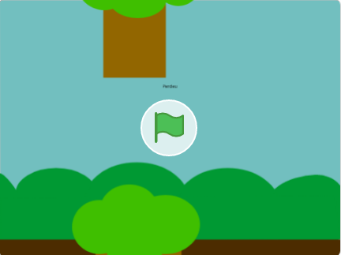

Material produzido pelos alunos do Curso Edutech e Pensamento Computacional durante o ano de 2022.
Link do Jogo - Recicla Tudo: Link
Criado por Leticia Menegon
Link do Jogo - Pong: Link
Criado por José Santana
Link do Jogo - Piano: Link
Criado por Leticia Menegon
Link do Jogo - Corrida: Link
Criado por José Santana
Link do Jogo - Robô Inteligente: Link
Criado por Leticia Menegon
Link do Jogo - Rato e queijo (sensor de vídeo): Link
Criado por José Santana
Link do Jogo - Show: Link
Criado por Leticia Menegon
Link do Jogo - Flappy Bird: Link
Criado por José Santana

Link do Jogo - Corrida: Link
Criado por Leticia Menegon